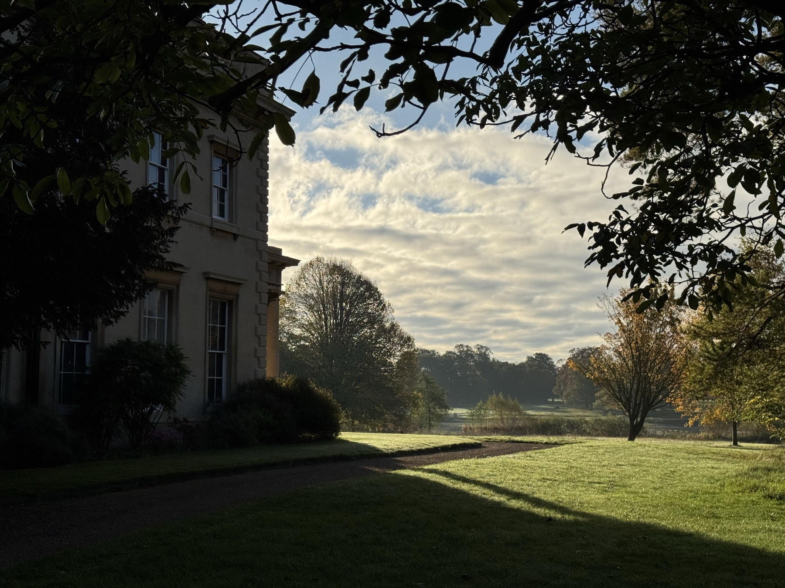

Lecturer · Intelligent Robotics & AI
Dr. Ionut (Yani) Moraru,
PhD
About

I am a Lecturer at the Lincoln Institute for Agri-Food Technology (LIAT), University of Lincoln, working on autonomous decision-making for robotic systems operating in unstructured field environments.
My doctoral work focused on AI planning and heuristic search — in particular symbolic pattern databases and the planners that competed in the International Planning Competition (IPC) 2018. I now combine those techniques with explainable AI and argumentation to build robots that can plan, act, and collaborate with people in agriculture.
Interests: AI planning heuristic search agri-robotics human–robot interaction explainable AI.

Education
- 2017–2022 PhD in Computer Science Research, King's College London Supervisors: S. Parsons, S. Edelkamp, P. McBurney, A. Coles
- 2013–2017 BSc in Computer Science (with Year Abroad), King's College London Year abroad: National University of Singapore
Research
-
AI Planning & Heuristic Search
Symbolic pattern databases, automated pattern selection, and plan repair / plan-library reuse for long-horizon robotic tasks.
-
Agri-Robotics
Autonomous platforms for field operations — from variable-autonomy weeding to in-field logistics in soft-fruit production.
-
Human–Robot Interaction
Mixed-initiative teaming where growers and robots share planning responsibility through dialogue and shared autonomy.
-
Explainable AI
Argumentation-based reasoning that lets a robot justify its plans to non-expert operators in the field.
Selected Publications
2025
- . Miscanthus-AI: Applying computational argumentation for decision support in plant breeding. The Plant Phenome Journal, 8(1):e70028, 2025.
2024
- . ArgHRI: Mediating Human–Robot Teaming With Automated Argumentation in Agriculture. IEEE 2nd Conference on AgriFood Electronics (CAFE), pp. 190–194, 2024.
- . IRfold: An RNA Secondary Structure Prediction Approach. IFIP International Conference on Artificial Intelligence Applications and Innovations (AIAI), pp. 131–144, 2024.
2023
- . A Variable Autonomy approach for an Automated Weeding Platform. Variable Autonomy for Human–Robot Teaming (VAT) workshop at the 18th ACM/IEEE Int'l Conference on Human–Robot Interaction (HRI), 2023.
- . The ComplementaryPDB Planner. ICAPS 2023 — IPC-10 Planner Abstracts, 2023.
2022
- . Using IoT Assistive Technologies for Older People Non-Invasive Monitoring and Living Support in Their Homes. International Journal of Environmental Research and Public Health, no. 10, 2022.
2021
- . Using Plan Libraries for Improved Plan Execution. UKRAS21 Conference: "Robotics at Home", 2021.
2019
- . Simplifying Automated Pattern Selection for Planning with Symbolic Pattern Databases. Joint German/Austrian Conference on Artificial Intelligence (KI), 2019.
- . Benchmarks Old and New: How to Compare Domain Independence. ICAPS 2019 Workshop on the International Planning Competition (WIPC), 2019.
2018
- . The Complementary2 Planner. ICAPS 2018 — IPC-9 Planner Abstracts, pp. 28–31, 2018.
- . The Planning-PDBs Planner. ICAPS 2018 — IPC-9 Planner Abstracts, pp. 63–66, 2018.
- . Automated Pattern Selection using MiniZinc. CP Workshop on Constraints and AI Planning, 2018.
Reviewer: Knowledge Engineering Review (2019–2023); International Conference on Automated Planning and Scheduling (ICAPS, 2020); European Conference on Artificial Intelligence (ECAI, 2024–2025); Explainable Robotics workshop at ICRA (2023).
Teaching & Supervision
University of Lincoln
- AGR9013 Introduction to Data Mining MSc · Lecturer · 2022–
- ROB2003 Robotics and Sustainability BSc · Lecturer · 2022–
- LIAT Research Methods MSc · Lecturer · 2024–
Outreach
- 2020–2023 Machine Learning — Curriculum X King's College London Mathematics School
Prior to joining Lincoln I taught as a Teaching Assistant at King's College London (2016–2021) across Machine Learning & Pattern Recognition, AI Reasoning & Decision Making, AI Planning, Ethics & Philosophy of AI, and several software engineering modules.
I supervise PhD, MSc, and BSc projects in robotics and applied AI — particularly at the intersection of planning, human–robot interaction, and agri-food applications. Prospective students are welcome to get in touch with a brief research statement and CV.
Projects
-
Agri-OpenCore
Working on the autonomy and usability of the platform — an open architecture for agricultural robotics.
-
HiRes Soils
Developing a robot to sample and evaluate the soils of crop fields at higher spatial resolution than current methods allow. Involved from the proposal stage.
-
Consult
Combining wearable health technology with an argumentation-based AI assistant to support stroke survivors in their recovery. Built and deployed the cloud back-end.
-
ARWAC — Attack Blackgrass in Farming
Designing an autonomous platform to identify and remove blackgrass from crop fields, in partnership with ARWAC.
Awards & Talks
Awards
- 2018 International Planning Competition — 2nd place, Optimal Track ICAPS · Delft, NL
- 2018 Planning & Execution Competition for Logistics Robots — 2nd place overall ICAPS · Delft, NL
- 2018–2021 King's Education Award — nominated King's College London, Informatics
- 2014 UnituHack — 2nd prize Student & Staff Hackathon, London
Selected Talks
- 2024 "AI Planning with Pattern Databases" — invited talk Transilvania University · Braşov, RO
- 2019 "Simplifying Automated Pattern Selection for Planning with Symbolic PDBs" ICAPS 2019 · UC Berkeley, US
Contact
- Emailimoraru@lincoln.ac.uk
- OfficeLincoln Institute for Agri-Food Technology, University of Lincoln
- Google Scholarscholar.google.com/citations?user=Ry3j1mYAAAAJ
- GitHub@ionut94
- ORCID0000-0002-8314-037X
- LinkedIn/in/ionut-moraru-03a711a6
- CVDownload (PDF)